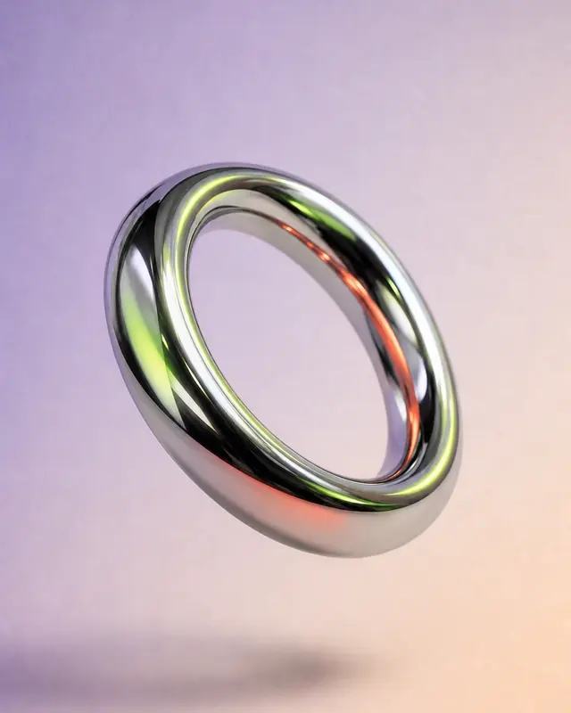
12 studies · 6 hover treatments · 0 libraries
Scroll is the interface.
A board of images that react to the hand and the scroll. Hover anything. Everything here is vanilla CSS and JS — copy a card, keep the motion.
The board
Twelve objects, six behaviours.
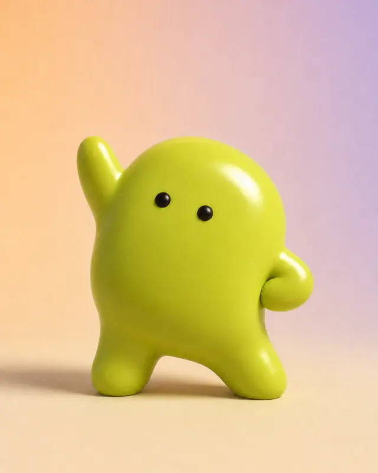
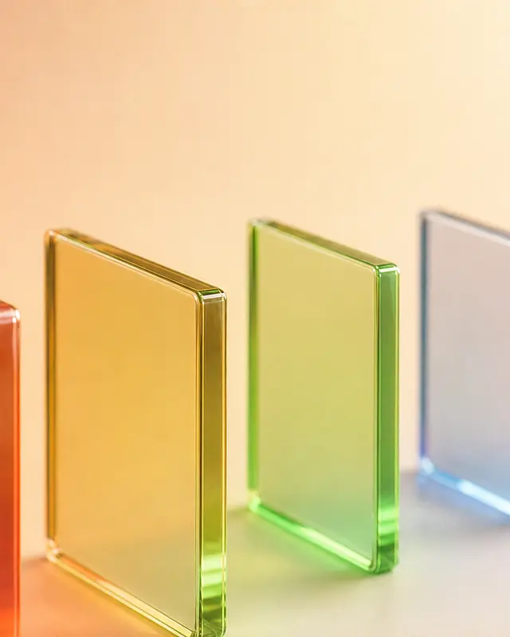
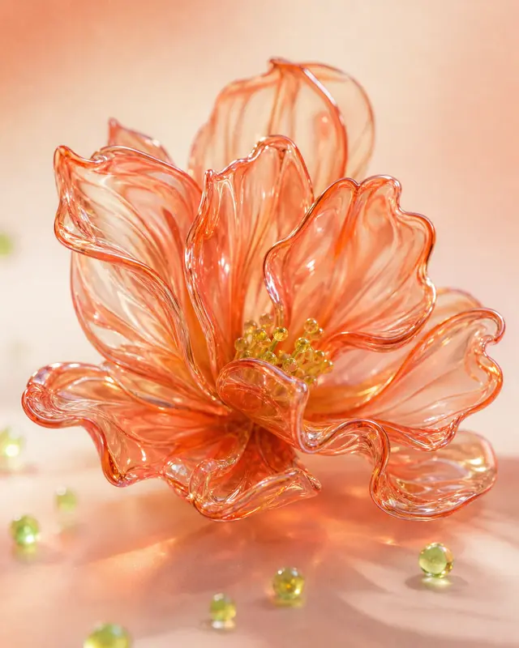
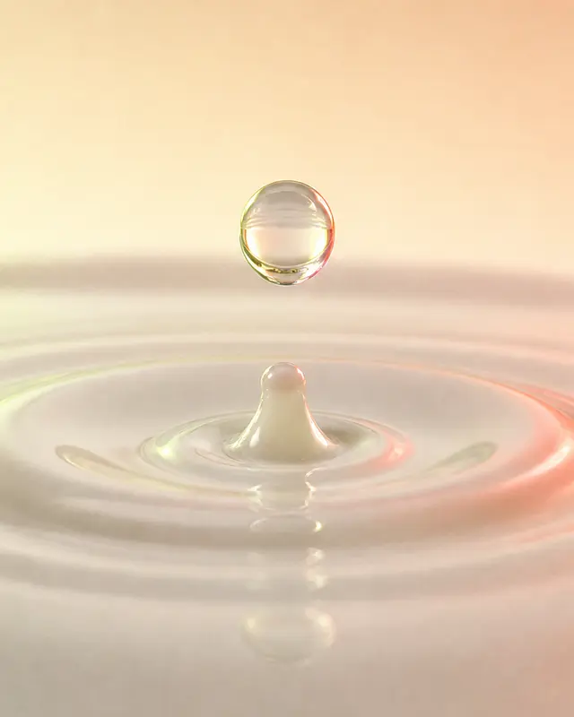
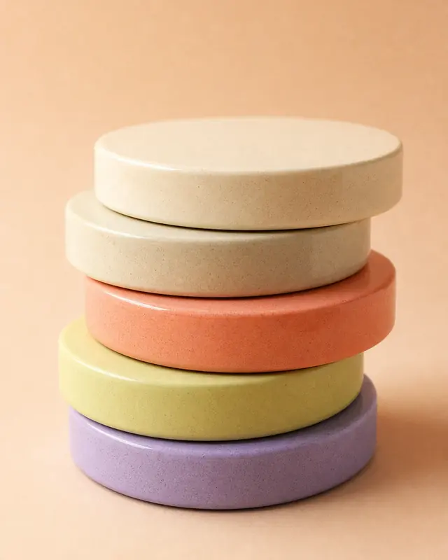
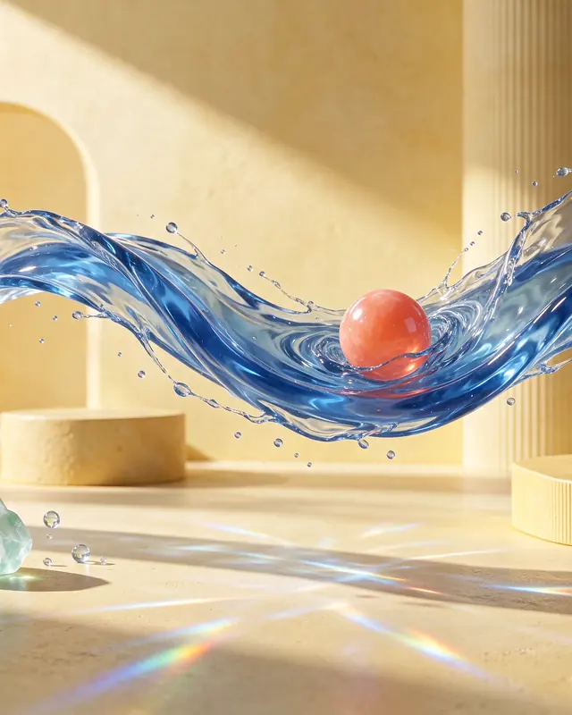
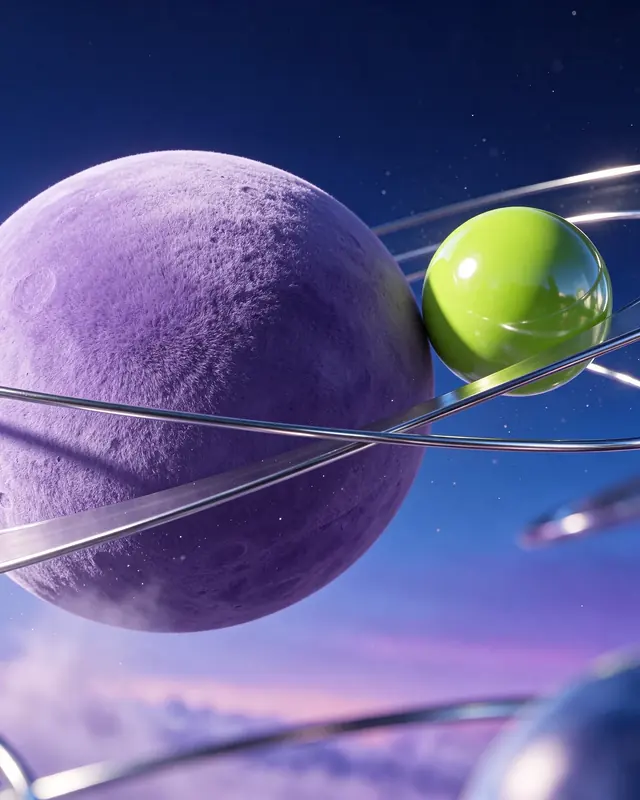
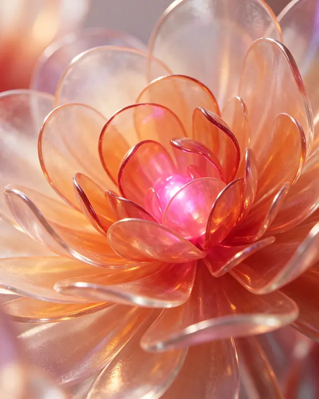
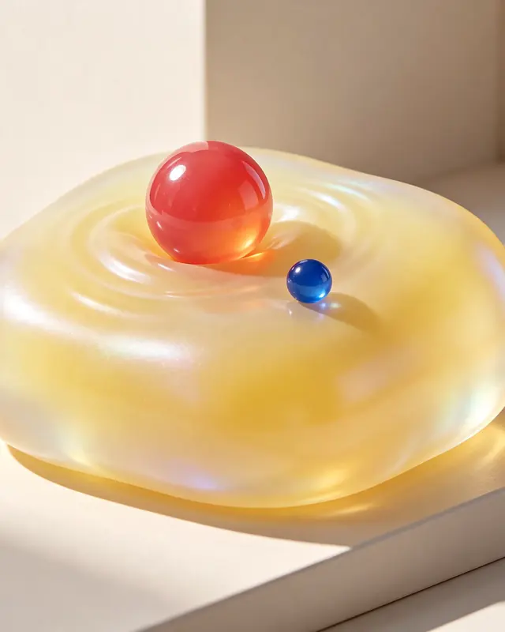
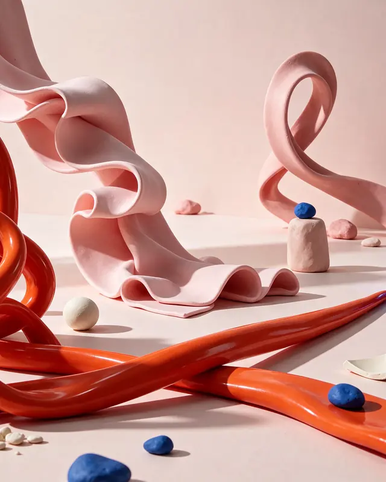
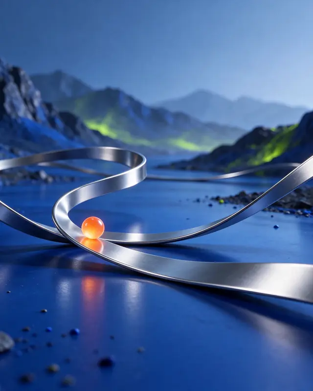
Hover a card — each one answers differently.
Motion types
Hover a line, see it move.
- 01
Scroll scrub
Frames tied to scroll position, scrubbed by the thumb.
- 02
Pointer parallax
Layers drift at different depths as the hand moves.
- 03
Letter stagger
A headline assembles itself, one glyph at a time.
- 04
Shader field
A canvas surface that breathes behind the type.
- 05
Magnetic pull
A button that leans toward the cursor and springs home.
Pinned horizontal
One long band, dragged by the scroll.
Chrome
Bloom
Stack
Tide
Mascot
Orbit
The lab
Six small machines.
Each tile is one technique you can lift straight into a project. Hover, click, toggle — they are all live.
Magnetic pull
Button leans toward the hand, springs home on leave.
Flip card
Click to turn. rotateY on the inner face only.
Glare border
A conic highlight tracks the pointer around the edge.
Elastic toggle
The knob overshoots and settles — cubic-bezier(.34,1.56,.64,1).
Underline draw
Read the notesscaleX from the left, reversed on exit.
Scramble
Hover to decode
Glyphs resolve left to right, then the real text lands.